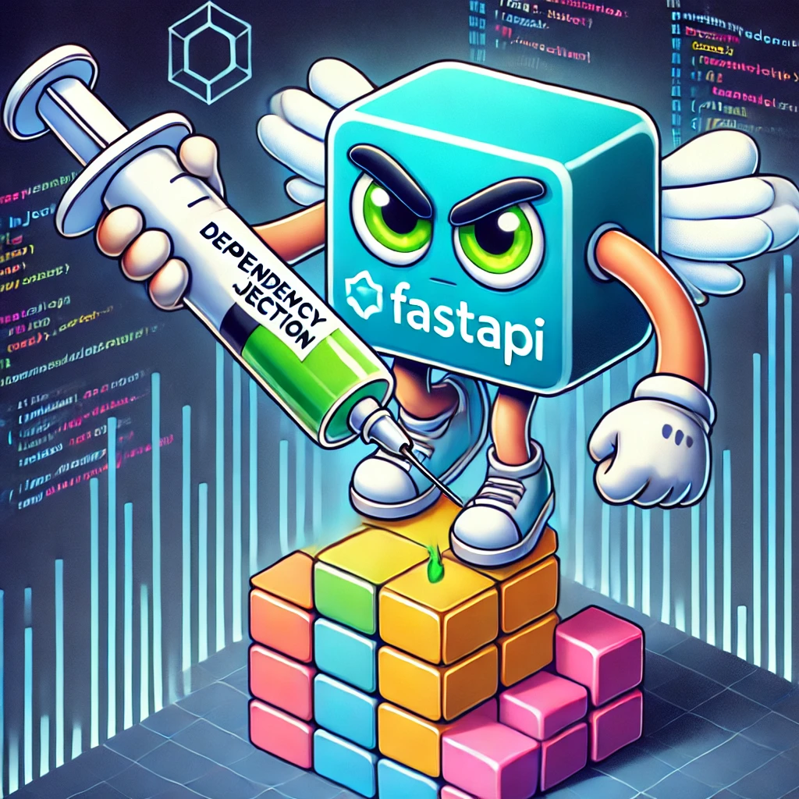
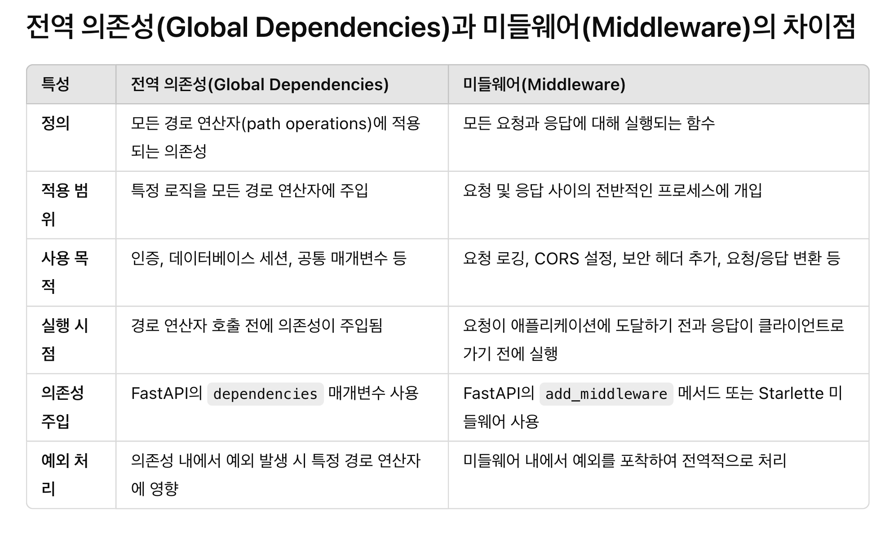

<meta charset="utf-8">
<html lang="ko">
<head>
    <link rel="stylesheet" type="text/css" href="./../style.css" />
    <title>FastAPI 의존성 주입, Depends 를 알아보자</title>
</head>
<body id="tt-body-page" class="">
<div id="wrap" class="wrap-right">
    <div id="container">
        <main class="main ">
            <div class="area-main">
                <div class="area-view">
                    <div class="article-header">
                        <div class="inner-article-header">
                            <div class="box-meta">
                                <h2 class="title-article">FastAPI 의존성 주입, Depends 를 알아보자</h2>
                                <div class="box-info">
                                    <p class="category">탐구 생활/FastAPI</p>
                                    <p class="date">2024-12-04 20:05:21</p>
                                </div>
                            </div>
                        </div>
                    </div>
                    <hr>
                    <div class="article-view">
                        <div class="contents_style">
                            <p><figure class="imageblock alignCenter" width="350" height="350" >
    <span data-lightbox="lightbox">
        
    </span>
    <figcaption></figcaption>
</figure></p>
<p data-ke-size="size16">Spring 을 쓰다가 FastAPI 로 전환하면서 많은 것들이 의문이었지만 그중 가장 큰 것은 "Python 은 빌드되는게 아닌데 의존성 주입을 사용할 수 있나?" 였다. 그리고 그런 나에게 보란듯이 FastAPI 공식 문서에는 <a href="https://fastapi.tiangolo.com/ko/tutorial/dependencies/" target="_blank" rel="noopener">의존성 주입 파트</a>가 있다.&nbsp; 이 글은 공식문서를 정독하고 정리하는 글 정도가 되겠다. 이미 어느정도 Depends 를 알고 있고, Depends 의 내부동작을 파악하고 싶다면 <a href="https://probehub.tistory.com/63" target="_blank" rel="noopener">다음 글</a>이 도움이 될 수도 있다.</p>
<hr contenteditable="false" data-ke-type="horizontalRule" data-ke-style="style5" />
<div class="container">
<h2 data-ke-size="size26"><b>FastAPI 의존성 주입(Dependency Injection) 정리</b></h2>
<p data-ke-size="size16">FastAPI는 의존성 주입(Dependency Injection, DI)을 통해 코드의 재사용성, 유지보수성, 테스트 용이성을 향상시킨다.&nbsp;</p>
<h3 id="basic-dependencies" data-ke-size="size23"><b>1. 기본 의존성 주입</b></h3>
<p data-ke-size="size16">FastAPI에서 기본적인 의존성을 정의하고 사용하는 방법은 다음과 같다.</p>
<h4 data-ke-size="size20"><b>1.1. 의존성 함수 정의하기</b></h4>
<pre class="python"><code>from fastapi import Depends, FastAPI

app = FastAPI()

def get_db():
    db = connect_to_db()
    try:
        yield db
    finally:
        db.close()
</code></pre>
<p data-ke-size="size16">위 예제에서는 데이터베이스 세션을 관리하는 의존성 함수를 정의했다. <code>yield</code>를 사용하여 세션을 반환하고, 요청이 완료된 후 세션을 닫는 동작을 한다.</p>
<h4 data-ke-size="size20"><b>1.2. 의존성 주입 사용하기</b></h4>
<pre class="pgsql"><code>from fastapi import Depends, FastAPI
from sqlalchemy.orm import Session

app = FastAPI()

@app.get("/items/")
def read_items(db: Session = Depends(get_db)):
    items = db.query(Item).all()
    return items
</code></pre>
<p data-ke-size="size16">경로 작업 함수(path operation function)에서 <code>Depends</code>를 사용하여 <code>get_db</code> 의존성을 주입받는다. 이를 통해 데이터베이스 세션을 쉽게 사용할 수 있다.</p>
<p data-ke-size="size16">&nbsp;</p>
<h4 data-ke-size="size20"><b>1.3. 기본 사용방법 정리</b></h4>
<p data-ke-size="size16">일단 나는 여기까지만 파악했을 때 혼란스러웠다. 이게 뭐지? 하는 기분이었다. 그런데 놀랍게도 의존성으로 주입되는 대상이 호출 가능한 (Callable) 객체라는 점에서 Spring 과 유사점이 있다. 다만 다른 점이 있다면 FastAPI 의 의존성은 경로 작업 함수(FastAPI 인스턴스로 정의된 경로)에서만 유효하다는 점이다.</p>
<p data-ke-size="size16">&nbsp;</p>
<p data-ke-size="size16">아직까지 많은 것들이 이해되지 않지만 나같은 범재는 학습할때 우선 받아들이고 넘어가는 과정이 필요하다. 우선 팩트를 그대로 받아들이고 넘어가자.</p>
<p data-ke-size="size16">&nbsp;</p>
<p data-ke-size="size16">그리고 이번 예제에서는&nbsp; yield&nbsp; 를 사용하고 있다. 의존성 주입시 yield 를 이용하여 리소스를 안전하게 관리할 수 있다는 것도 장점이다.</p>
<hr contenteditable="false" data-ke-type="horizontalRule" data-ke-style="style6" />
<h3 id="classes-as-dependencies" data-ke-size="size23"><b>2. 클래스를 사용한 의존성</b></h3>
<p data-ke-size="size16">클래스를 사용하여 의존성을 정의하면 상태를 유지하거나 여러 메서드를 포함할 수 있다.</p>
<pre class="ruby"><code>from fastapi import Depends, FastAPI

app = FastAPI()

class CommonQueryParams:
    def __init__(self, q: str = None, limit: int = 10):
        self.q = q
        self.limit = limit

@app.get("/items/")
def read_items(commons: CommonQueryParams = Depends(CommonQueryParams)):
    return {"q": commons.q, "limit": commons.limit}
</code></pre>
<p data-ke-size="size16">위 예제에서는 <code>CommonQueryParams</code> 클래스를 의존성으로 사용하여 공통 쿼리 매개변수를 처리한다.</p>
<p data-ke-size="size16">&nbsp;</p>
<h4 data-ke-size="size20"><b>2.1 클래스를 사용한 의존성 정리</b></h4>
<p data-ke-size="size16">Python 에서 클래스는 Callable 하다는 것을 명심하자. Java 도 클래스를 new 키워드로 호출하면 기본 생성자가 호출되지 않는가? Python 도 똑같다. CommonQueryParams 클래스의 __init__ 함수가 호출되는것이다.</p>
<hr contenteditable="false" data-ke-type="horizontalRule" data-ke-style="style6" />
<h3 id="sub-dependencies" data-ke-size="size23"><b>3. 서브-의존성</b></h3>
<p data-ke-size="size16">의존성은 다른 의존성을 포함할 수 있습니다. 이를 서브-의존성이라고 한다.</p>
<pre class="python" data-ke-language="python"><code>from fastapi import Depends, FastAPI, HTTPException, Header
from datetime import datetime
from typing import Optional

app = FastAPI()


def get_token_header(authorization: Optional[str] = Header(None)):
    """
    Authorization 헤더에서 토큰을 추출하고 검증합니다.
    헤더 형식은 'Bearer &lt;token&gt;'이어야 합니다.
    """
    if authorization is None:
        raise HTTPException(status_code=400, detail="Authorization header missing")
    
    try:
        scheme, token = authorization.split()
        if scheme.lower() != "bearer":
            raise HTTPException(status_code=400, detail="Invalid authentication scheme")
    except ValueError:
        raise HTTPException(status_code=400, detail="Invalid Authorization header format")
    
    if token != "expected_token":
        raise HTTPException(status_code=400, detail="Invalid Token")
    
    return datetime.now()


def get_current_user(now: datetime = Depends(get_token_header)):
    """
    현재 사용자를 반환합니다. 여기서는 단순히 요청 시각을 반환합니다.
    """
    return {"time": f"{now}"}


@app.get("/users/me")
def read_current_user(current_user: dict = Depends(get_current_user)):
    """
    현재 사용자의 정보를 반환하는 엔드포인트입니다.
    """
    return current_user</code></pre>
<p data-ke-size="size16">&nbsp;</p>
<p data-ke-size="size16">여기서 <code>get_current_user</code>는 <code>get_token_header</code>를 서브-의존성으로 사용하여 토큰 검증 후 현재 시간을 반환한다.</p>
<p data-ke-size="size16">&nbsp;</p>
<h4 data-ke-size="size20"><b>3.1 서브-의존성 정리</b></h4>
<p data-ke-size="size16">API 문서를 보자, header 로 Authorization 을 요구함을 알 수 있다.</p>
<figure class="imageblock alignCenter" width="600" height="284" >
    <span data-lightbox="lightbox">
        
    </span>
    <figcaption></figcaption>
</figure>
<p data-ke-size="size16">&nbsp;</p>
<p data-ke-size="size16">이 요청을 보내보자</p>
<pre id="code_1733311930572" class="bash" data-ke-language="bash" data-ke-type="codeblock"><code>curl -X 'GET' \
  'http://127.0.0.1:8000/users/me' \
  -H 'accept: application/json' \
  -H 'Authorization: bearer expected_token'</code></pre>
<p data-ke-size="size16">&nbsp;</p>
<p data-ke-size="size16">정상적으로 처리됨을 알 수 있다.</p>
<p data-ke-size="size16">&nbsp;</p>
<p data-ke-size="size16">이를 통해 서브-의존성을 통핸 의존성 체인 구성은 결국 의존성 Stack(가정이다...) 의 최상단에 있는 의존성부터 순차적으로 처리해나가고 결국 API 에서는 최상단에서 요청하는 값을 요구하게 된다. 그리고 각 의존성 함수가 수행되면서 자신을 호출한 호출자에게 반환값을 전달한다.</p>
<p data-ke-size="size16">&nbsp;</p>
<p data-ke-size="size16">이정도면 의존성 체이닝이라고 부를 수도 있지 않을까?</p>
<hr contenteditable="false" data-ke-type="horizontalRule" data-ke-style="style6" />
<h3 id="global-dependencies" data-ke-size="size23"><b>4. 전역 의존성</b></h3>
<p data-ke-size="size16">전역 의존성은 애플리케이션 전체에 걸쳐 모든 경로 연산자에 적용되는 의존성이다.</p>
<pre class="python"><code>from fastapi import Depends, FastAPI

app = FastAPI()

def verify_token(token: str):
    if token != "secret-token":
        raise HTTPException(status_code=400, detail="Invalid Token")
    return token

app = FastAPI(dependencies=[Depends(verify_token)])

@app.get("/protected-route/")
def protected_route():
    return {"message": "Access granted"}
</code></pre>
<p data-ke-size="size16">위 예제에서는 <code>verify_token</code> 의존성을 전역 의존성으로 설정하여 모든 경로 연산자에 적용된다.</p>
<p data-ke-size="size16">이러한 전역 의존성은 FastAPI 구현체 혹은 APIRouter 구현체에 적용할 수 있다.</p>
<p data-ke-size="size16">&nbsp;</p>
<h3 data-ke-size="size23"><b>4.1 전역의존성 정리</b></h3>
<p data-ke-size="size16">전역 의존성의 역할이 미들웨어와 다른점이 무엇인지 고민이 생기는 지점이다. 그래서 GTP 에게 물어봤다.</p>
<figure class="imageblock alignCenter" width="600" height="359" >
    <span data-lightbox="lightbox">
        
    </span>
    <figcaption></figcaption>
</figure></div>
                        </div>
                        <br/>
                        <div class="tags">
                            #FastAPI #fastapi 의존성 
                        </div>
                    </div>
                </div>
            </div>
        </main>
    </div>
</div>
</body>
</html>
